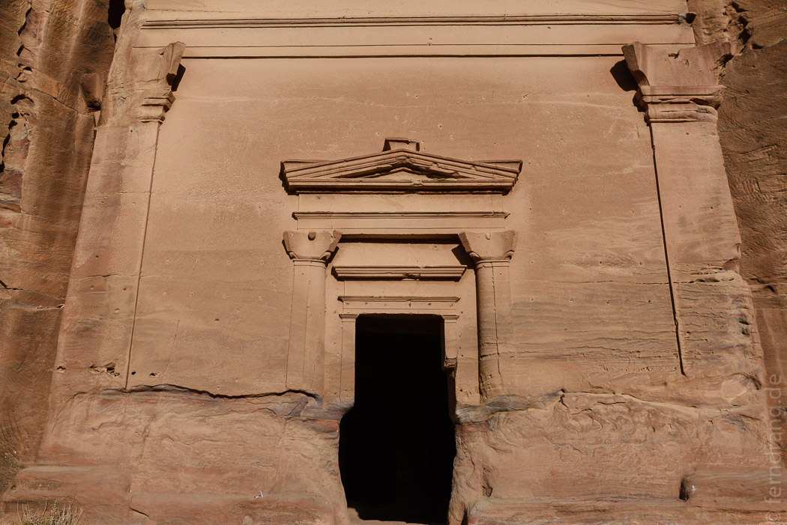

25/09/2016
Petra
Eine kurze Fahrt weiter nach Süden bringt uns nach Wadi Mousa, dem Städtchen bei Jordaniens größter Sehenswürdigkeit und einem der sieben neuen Weltwunder: Petra. Im Ort gibt es sehr viele Hotels, die fast alle leer und schäbig sind. In den restlichen Gebäuden sind entweder Barbiere oder Süßigkeitenläden untergebracht.
Vom Ticketschalter geht man eine Viertelstunde bis zum Anfang des berühmtesten Siqs Jordaniens. Im Gegensatz zu der Ruhe von Dana ist hier viel los. Aber es ist wohl nur ein Bruchteil dessen, was hier vor Jahren mal üblich war. Daher gibt es auch mehr Kamel- und Eseltreiber als Besucher, was ziemlich nervt. Diese Typen verkleiden sich als Beduinen-Piraten und werden aufgrund ihrer schlechten Witze hoffentlich bald arbeitslos. Der Siq ist breit genug, dass faule Besucher sich mit Kutschen fahren lassen können, und der neu gegossene Boden raubt dem Weg seinen natürlichen Charme. Doch die Wände sind hoch und eindrucksvoll gemasert. Später wird der Siq enger und man erhascht endlich einen Blick auf Teile des Schatzhauses, der Ikone von Petra.
Der Anblick der vollen Fassade ist überwältigend. Das aus dem Fels gehauene Grabmal ist ein wilder stilistischer Mischmasch. Obwohl es an die 2000 Jahre her ist, dass die Nabatäer hier Hammer und Meißel in die Hand genommen haben, sieht das Grabmal aus als sei es erst gestern erst aus dem zart orange-rosafarbenen Sandstein gehauen worden. Es sieht so neu aus, dass wir an seiner Echtheit zweifeln – das hat man von guter Qualität. Tatsächlich wurde hier auch einiges instand gesetzt aber der Ort ist auch vor Witterung gut geschützt.
Dahinter führt die Schlucht noch ein Stückchen weiter, bevor sie in ein breiteres Tal mündet. Hier stehen Unmengen von Grabmälern, von denen jedoch keines so gut erhalten oder so schön gestaltet ist wie das Schatzhaus. Wir steigen zuerst endlose Treppen hinauf zu einer Opferstätte. Die Nabatäer hatten offenbar keinen sonderlich guten Draht zu ihren Göttern, so dass sie häufig zu Tieropfern greifen mussten. Sie haben sogar extra Blutrinnen angelegt, wahrscheinlich damit die Sauerei nicht die Treppen herunter fließt, die sie mühselig in den Berg gehauen haben. Von oben hat man einen guten Blick über das weitläufige Gelände.
Wieder unten kommen wir am Amphitheater vorbei, das natürlich auch aus dem Fels gehauen wurde. Der weiche Stein ist schon stark verwittert, was den Eindruck erweckt, das Bauwerk sei irgendwann mal bei großer Hitze geschmolzen. Gegenüber sind auf der Breite eines ganzen Berghangs Grabmäler mit eindrucksvollen Fassaden angelegt worden. Die meisten sind auch schon von der Witterung verformt und verwaschen. Aber der Stein hat hier eine tolle rot-weiße Maserung, die wie bemalt aussieht. Wir turnen bis zum Sonnenuntergang auf den Hängen herum, bis alles golden glänzt.
